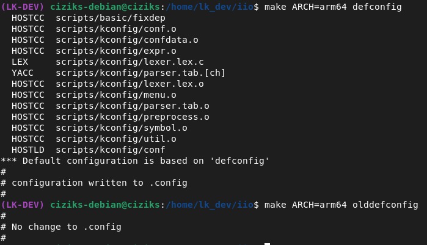
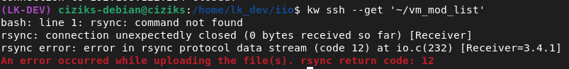
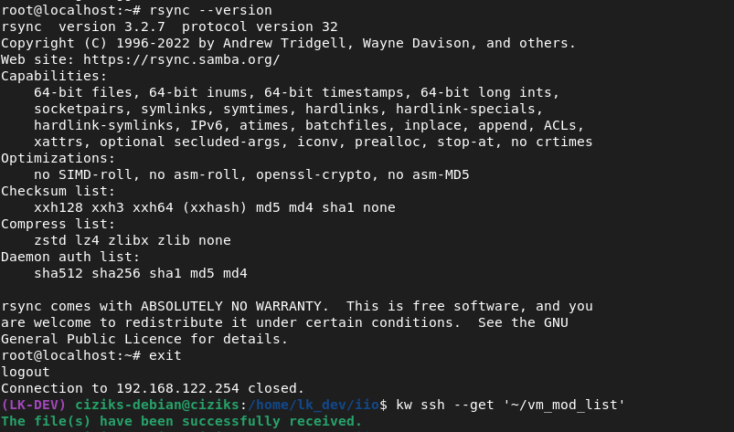
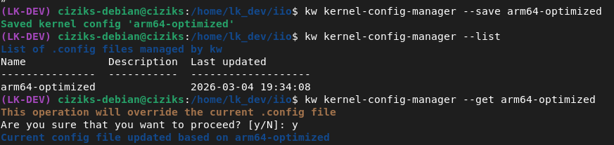
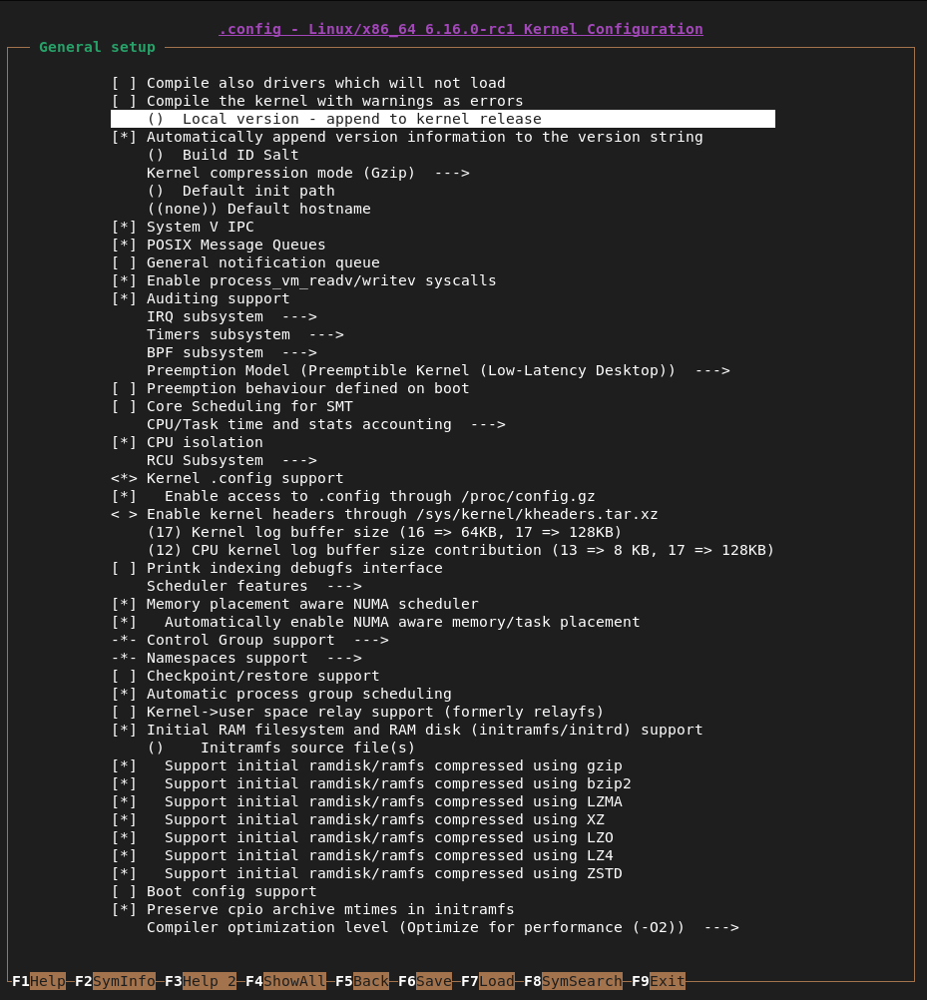
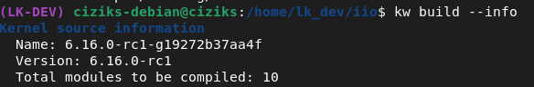
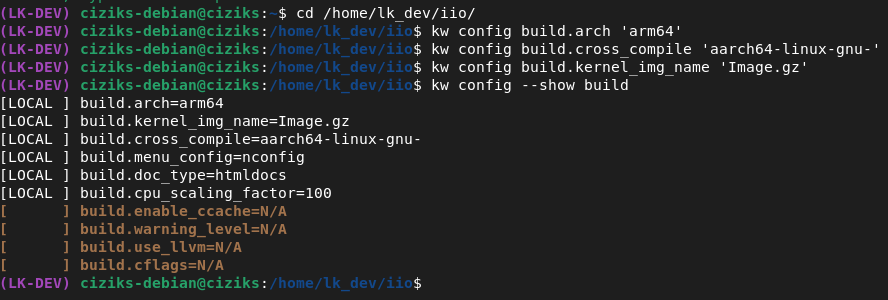
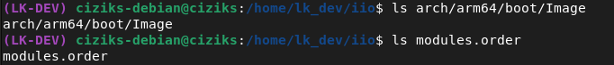
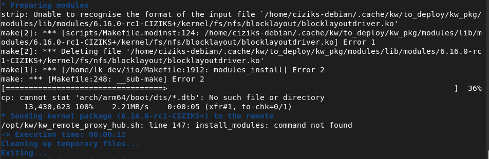
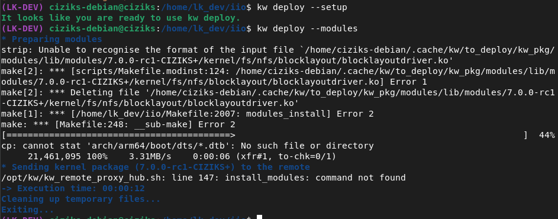

1) Introdução
Referência: FLUSP - Building and booting a custom Linux kernel for ARM using kw
O objetivo deste relato é documentar minha experiência seguindo o tutorial de compilação e
deploy do kernel Linux para ARM64 utilizando o kworkflow (kw),
uma ferramenta desenvolvida pelo grupo FLUSP para facilitar o ciclo de desenvolvimento do kernel.
O fluxo geral deste tutorial consiste em: instalar o kw, clonar a árvore do
subsistema IIO (que será nosso alvo de contribuição), configurar a compilação cruzada para
ARM64, compilar o kernel e fazer o deploy na VM criada no tutorial anterior.
2) Instalando o kw
Seguindo o tutorial, não encontrei nenhum problema nesta etapa. Os passos foram:
- Adicionei o caminho
/kwnoactivate.sh:export KW_DIR="${LK_DEV_DIR}/kw" - Clonei o repositório do
kworkflow:git clone https://github.com/kworkflow/kworkflow.git "$KW_DIR" - Dentro do
KW_DIR, troquei para a branch sugerida pelo tutorial:cd "$KW_DIR" git switch unstable - Rodei o script de instalação:
./setup.sh --full-installation - Para garantir que estava na versão mais recente:
kw self-update --unstable
kw instalado corretamente!
3) Clonando a Tree IIO
Também sem problemas. Os passos foram:
- Adicionei o caminho da árvore IIO no
activate.sh:export IIO_TREE="${LK_DEV_DIR}/iio" - Clonei a branch de teste do repositório IIO:
git clone git://git.kernel.org/pub/scm/linux/kernel/git/jic23/iio.git "${IIO_TREE}" \ --branch testing --single-branch --depth 10
Apesar do tutorial sugerir clonar sem especificar --branch e sem --depth para
entender melhor a código do kernel depois, não disponho de espaço em disco suficiente para isso,
então utilizei esses parâmetros para reduzir o tamanho do clone.
4) Configurando o kw> para o IIO
Com a árvore do IIO clonada, inicializei o kw dentro dela:
cd "$IIO_TREE"
kw initAntes de prosseguir, iniciei a VM:
sudo systemctl start libvirtd
sudo virsh start --console arm64
(O sudo virsh net-start default não foi necessário pois já configurei
net-autostart no relato anterior)
Para obter o IP da VM e configurar a conexão remota padrão do kw:
# Descobrir o IP da VM
sudo virsh net-dhcp-leases default
# Adicionar e definir o remote padrão
kw remote --add arm64 root@<vm-ip> --set-defaultTestando a conexão com kw ssh, a conexão foi estabelecida com sucesso.
5) Configurando a Compilação do Kernel
Gerando o .config base
Dentro da IIO_TREE, gerei o arquivo de configuração padrão para ARM64
e em seguida atualizei-o com o olddefconfig para preencher quaisquer opções novas:
make ARCH=arm64 defconfig
make ARCH=arm64 olddefconfig
make defconfig e make olddefconfig gerando o .config baseTroubleshooting - rsync não encontrado
Ao tentar copiar a lista de módulos da VM para o IIO com kw ssh --get,
o comando falhou com um erro no rsync:

rsync ausente na VMA solução foi instalar o rsync dentro da VM:
# Acessar a VM
kw ssh
# Dentro da VM
sudo apt install rsync
exitApós a instalação, o comando kw ssh --get '~/vm_mod_list' funcionou corretamente:

rsync na VMSalvando o .config com kernel-config-manager
Com o .config gerado, utilizei o kw kernel-config-manager para
salvar, listar e restaurar configurações de forma organizada:

kw kernel-config-manager --save, --list e --get gerenciando o .configEditando o .config com o menu do kw
O kw oferece uma TUI (interface de texto) para editar o .config
com segurança, evitando edições manuais que possam corromper a configuração:
kw build --menu
kw build --menu para edição segura do .configDentro da TUI, naveguei até General setup → Local version para identificar e alterar a versão local do kernel:

Defini o valor como -CIZIKS e desabilitei o Automatically append version information to the version string, o que resultará na versão
6.16.0-rc1-CIZIKS+ ao executar uname -r na VM:
-CIZIKS - identificador personalizado do kernelPara confirmar as informações do kernel antes de compilar:
kw build --info
kw build --info - kernel 6.16.0-rc1 com 10 módulos a compilar6) Compilando o Kernel
Para compilação cruzada para ARM64, foi necessário instalar
gcc-aarch64-linux-gnu:
sudo apt update && sudo apt install gcc-aarch64-linux-gnuEm seguida, configurei o kw para a compilação cruzada:
kw config build.arch 'arm64'
kw config build.cross_compile 'aarch64-linux-gnu-'
kw config build.kernel_img_name 'Image.gz'Para verificar a configuração de build atual:

kw config --show build - configurações para compilação cruzada ARM64Com tudo configurado, executei a compilação:
kw buildApós a conclusão, confirmei que a imagem do kernel e os módulos foram gerados:

arch/arm64/boot/Image e modules.order gerados com sucesso7) Deploy do Kernel na VM
Tentativa inicial e erro
Com o kernel compilado, tentei fazer o deploy dos módulos na VM com o seguinte comando:
kw deploy --modules
install_modules: command not found na VMTroubleshooting - kw deploy --setup
Por sugestão do monitor, tentei rodar kw deploy --setup primeiro, que envia
os arquivos necessários e instala os pacotes para que o deploy funcione. Porém, o erro
persistiu:

kw deploy --setup executado, mas o erro continuou na tentativa seguinteResolução - Apontando o kernel compilado no activate.sh
Após múltiplas tentativas de refazer os passos do tutorial, sem sucesso, o monitor David me sugeriu testar senão era uma falha visual do boot, mas que a VM poderia estar funcionando normalmente.
Assim, decidi avançar no tutorial e
verificar se o problema se resolveria. A chave foi atualizar o activate.sh
para apontar diretamente para a imagem do kernel recém-compilada na IIO,
em vez dos arquivos de boot originais:
--- a/activate.sh
+++ b/activate.sh
@@ launch_vm_qemu()
- -kernel "${BOOT_DIR}/<kernel>" \
+ -kernel "${IIO_TREE}/arch/arm64/boot/Image" \
@@ create_vm_virsh()
- --boot kernel=${BOOT_DIR}/<kernel>,...
+ --boot kernel=${IIO_TREE}/arch/arm64/boot/Image,...
Com o activate.sh atualizado, recriei a VM para aplicar a nova configuração:
sudo virsh shutdown arm64
sudo virsh undefine arm64
create_vm_virshAo bootar a VM e verificar a versão do kernel, o resultado confirmou que o kernel personalizado estava em execução:
root@localhost:~# uname --kernel-release
6.16.0-rc1-CIZIKS+
O kernel compilado a partir do IIO com a versão local -CIZIKS
foi bootado com sucesso na VM! Agora o ambiente está pronto para desenvolvimento
e testes de patches no subsistema IIO.